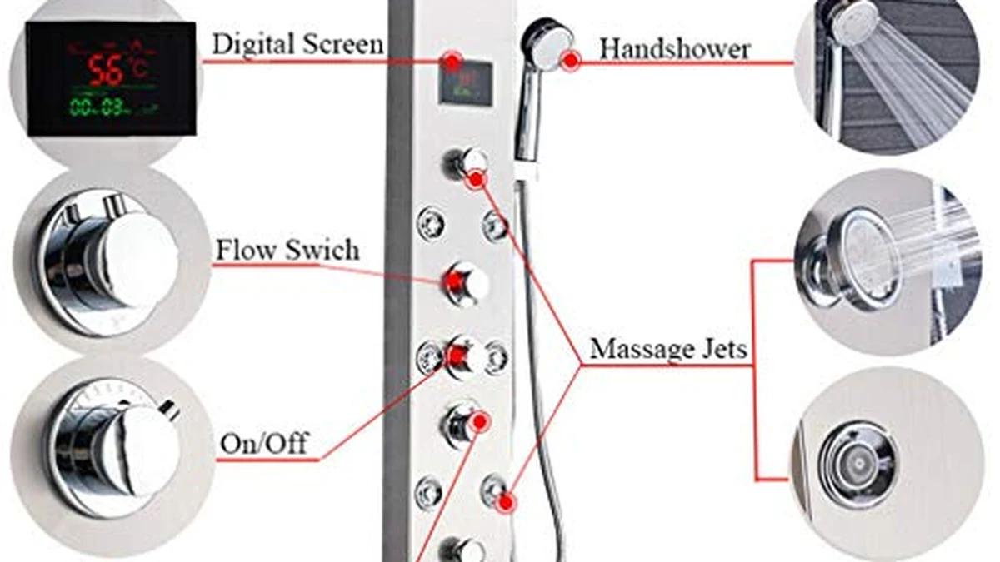

Things to Know Before You Buy
- Water pressure is the deal-breaker. Body jets need roughly 40 PSI or more to feel good. If your home runs low, even a great panel will disappoint.
- 304 stainless steel is the material to want. It resists rust and holds up in a wet environment far better than aluminum or glass-front panels.
- It plumbs into your existing hot and cold lines. Most panels mount over standard supply lines, but heavy stainless units need a wall that can carry the weight.
- Hydroelectric LED beats battery LED. A self-powered temperature display never needs a battery change buried behind the panel.
- Measure your wall height. Panels run 48 to 60 inches tall and have to clear your ceiling and fixtures.
A shower panel promises to turn an ordinary stall into a spa: a rainfall head overhead, a column of body jets hitting your back, a handheld wand for rinsing, all controlled from one place. When the water pressure and the plumbing cooperate, it delivers exactly that. When they do not, you get a wall of jets that dribble and a bracket that came loose. The difference between those two outcomes is almost never the price of the panel. It is whether you bought the right one for your house.
This guide walks through what actually matters before you buy: what a panel is and what it replaces, the jet and material choices that separate a good unit from a frustrating one, the water-pressure math nobody mentions until it is too late, and the install realities that decide whether you can do it yourself or need a plumber. The goal is simple, an informed purchase you will still be happy with two years from now.
At the end you will find three panels we would recommend for three different situations and budgets, so you can move from research to a real shortlist without wading through hundreds of near-identical listings.
What You Need to Know
A shower panel, sometimes called a shower tower, is an all-in-one wall-mounted fixture that combines several functions into a single unit. Instead of a separate shower head, separate body sprays, and separate valves, you get one tall panel that typically bundles a rainfall shower head at the top, a vertical column of body jets in the middle, and a handheld shower wand on a hose. Many models add a tub spout at the bottom so the same panel can fill a bathtub, and everything runs off one built-in control or diverter.
The appeal is twofold. First, it consolidates a spa-style setup that would otherwise cost far more to build from individual valves and body-spray rough-ins. Second, most panels are designed to retrofit over your existing plumbing, so you are usually not opening up the wall or moving pipes. You connect the panel to the hot and cold supply lines that already feed your current shower, mount it to the wall, and you are done.
That convenience comes with a trade-off worth understanding up front: a panel puts a lot of demands on your water supply. Running a rainfall head and several body jets at once needs volume and pressure that a single conventional shower head never asked for. That single fact drives most of the buying decisions in this guide, so keep it in mind as we go.
The short version: a shower panel replaces your head, body sprays, and handheld with one fixture that ties into your existing pipes. It is a genuine upgrade in feel, provided your home can supply the water to run it.
Types and Categories
Panels vary along a few axes. Sorting them out makes the listings far easier to compare.
By material
304 stainless steel is the material you want if you can. It resists rust, shrugs off constant moisture, and keeps its finish for years. It is also heavier, which matters for mounting but signals durability. Aluminum panels are lighter and cheaper, which is why plenty of budget models use them, but aluminum can corrode over time in a wet environment and tends to feel less substantial. Glass-front panels put a sheet of tempered glass over the body for a sleek, modern look. They can be stunning, but glass can crack if struck and adds cost. For a fixture that lives in water every day, stainless is the safe long-term bet.
By spray configuration
The number and placement of body jets is the headline feature. Some panels run three jets, others six or more, stacked to hit your back at different heights. More jets look impressive but also demand more water, so the count matters less than whether your pressure can feed them. The rainfall head size ranges from modest 8-inch heads to wide overhead panels. A handheld wand is nearly universal and genuinely useful for rinsing, cleaning, and washing hair.
By control type
A manual mixing valve blends hot and cold the way a standard shower does; you set the temperature by feel each time. A thermostatic valve holds a set temperature and reacts to pressure changes, which is safer and more comfortable but costs more. Many panels also carry an LED temperature display. The type of LED matters: a hydroelectric display is powered by the water flowing through the panel, so it never needs a battery. A battery-powered LED will eventually die in a spot that is a nuisance to reach, so hydroelectric is the more reliable choice.
How to Choose
With the categories clear, here is how to match a panel to your actual bathroom.
Start with your water pressure
This is the single most important factor, and it is the one buyers skip. Body jets need roughly 40 PSI or more to feel like anything, and 45 to 60 PSI is where they really come alive. Below that, the jets turn into a limp trickle and the whole reason you bought the panel evaporates. Before you buy, check your home's water pressure. An inexpensive gauge that screws onto a hose bib tells you in seconds. If you are on the low end, favor a panel with fewer, larger jets, or fix the pressure first; a panel cannot manufacture pressure it is not given.
Confirm the plumbing fit
Most panels mount over your existing hot and cold water lines and use standard threaded connections, but not all. Some models expect a specific rough-in or valve position, so read the install specs and compare them to what is behind your current shower. Check the thread size and valve compatibility so the fittings actually mate without a drawer full of adapters.
Check the wall and the weight
A stainless panel can be heavy, and it hangs on your shower wall. Make sure the wall can support the load and that you can anchor into something solid rather than just tile and thinset. A panel that pulls away from the wall is both a safety issue and a leak waiting to happen.
Measure the height
Panels typically run 48 to 60 inches tall. Measure from where the panel will sit up to your ceiling and any fixtures, and confirm the unit physically fits your wall before it ships.
Quick sanity check: if you know your pressure is good, your wall is solid, and the panel height fits, you have cleared the three hurdles that trip up most buyers. Everything else is preference.
Common Mistakes to Avoid
Most disappointed shower-panel owners made one of these avoidable mistakes.
- Buying a jet-heavy panel for a low-pressure home. This is the number-one regret. If your house cannot push 40 PSI, a six-jet panel will underwhelm no matter how good it is. Match the jet count to your pressure, or fix the pressure first.
- Ignoring plumbing compatibility. Assuming every panel drops onto your existing lines leads to a half-installed unit and a trip to the hardware store. Compare the panel's rough-in and thread specs to your wall before you order.
- Under-mounting a heavy stainless panel. Anchoring a heavy panel into tile alone, without hitting a stud or backing, is how brackets loosen and panels sag. Mount it to something that can carry the weight.
- Expecting cheap diverters to last. The diverter is the part you turn most, and bargain-bin plastic diverters are the first thing to fail. A slightly better valve pays for itself in years of use.
- Forgetting the LED type. A battery-powered temperature display seems fine until the battery dies behind the panel. Choose a hydroelectric (self-powered) LED and skip the problem entirely.
Care and Maintenance
A shower panel is low-maintenance, but a few habits keep it working and looking new.
- Wipe the stainless with a soft cloth. A microfiber cloth and mild soap keep the finish bright. Skip abrasive pads and harsh scouring cleaners, which scratch the surface and dull the shine.
- Descale the rain head and jets. If you have hard water, mineral buildup clogs the nozzles and weakens the spray. Periodically soak the removable head or wipe the rubber jet tips to clear deposits; many nozzles clean up with a thumb rub while the water runs.
- Check the fittings for leaks. Every so often, run the panel and look at the connections for drips or seepage. Catching a loose fitting early prevents water getting behind the wall.
- Keep the diverter moving freely. Exercise the diverter and valves now and then so they do not stiffen up. A diverter that turns smoothly lasts longer than one left in one position for months.
None of this takes more than a few minutes a month, and it is the difference between a panel that still feels like a spa in year three and one that clogs, drips, and disappoints.
Our Top Picks
If your homework checks out, here are three panels we would put on a shortlist. Each targets a different budget and situation, and all three are 304 stainless steel so durability is not the compromise.

Editor’s Pick
ELLO&ALLO Stainless Steel Shower Panel
Our overall pick. A well-built 304 stainless panel that pairs a rainfall head, body jets, and a handheld at a price that will not make you wince, with a self-powered LED temperature display that never needs a battery.
$229.97
Check Price on Amazon
Best Value
FUZ Contemporary Shower Panel Tower
The value play. A stainless panel that covers the essentials, rainfall head, jets, and handheld, for the least money, making it the smart entry point if you want to try the spa-shower experience without overcommitting.
$159.00
Check Price on Amazon
Premium Choice
Blue Ocean 52" Stainless Steel
The premium option. A tall 52-inch stainless panel for a bigger, more enveloping setup when you have the wall space, the water pressure, and the budget to do it properly.
$369.00
Check Price on AmazonFrequently Asked Questions
Do shower panels need high water pressure?
Yes, this is the factor that makes or breaks the experience. Body jets need roughly 40 PSI to feel satisfying, and 45 to 60 PSI is ideal. If your home runs below that, the jets will feel weak no matter how good the panel is. Test your pressure with an inexpensive hose-bib gauge before you buy, and if it is low, choose a panel with fewer jets or fix the pressure first.
Can I install a shower panel myself?
Sometimes. Most panels mount over your existing hot and cold supply lines with standard threaded connections, which is within reach for a confident DIYer. But heavy stainless panels need a wall that can carry the weight and solid anchoring, and some models expect a specific rough-in. Plenty of buyers hire a plumber to be sure the connections are leak-free and the panel is mounted securely.
Is stainless steel or aluminum better for a shower panel?
Stainless steel, specifically 304 stainless, is the better long-term choice. It resists rust and holds up in a constantly wet environment for years. Aluminum is lighter and cheaper, which is why budget panels use it, but it can corrode over time and feels less substantial. If durability matters to you, pay a little more for stainless.
Verdict
A shower panel is one of the few upgrades that genuinely changes how a daily routine feels, but only when it matches your house. Get the three fundamentals right, adequate water pressure, compatible plumbing, and a wall that can hold the weight, and a 304 stainless panel with a hydroelectric LED and a sensible jet count will serve you for years. Skip that homework and even the most expensive panel becomes a wall of disappointing dribbles. Check your pressure first, favor stainless, and buy the panel that fits your bathroom rather than the one with the most jets in the photo.